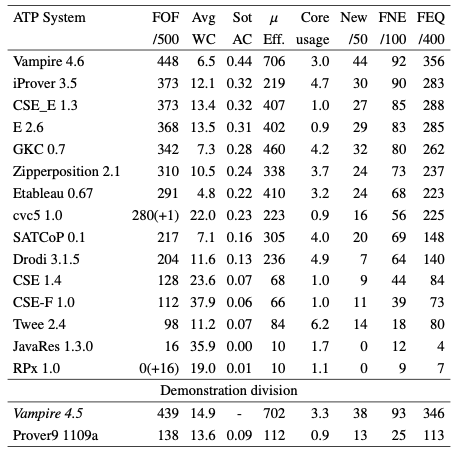

First-Order Form Results

Salient Systems
- Vampire 4.6 dominated
- Unexpected improved performance
- New features not for FOF, but affected strategy timing
- iProver and CSE_E in a tight battle, separated by FEQ
- iProver 3.5 improved: superposition, AC, learned heuristics
- No proof output from RPx ... but is it necessary?
Performance Measures
- Vampire did well in all measures
- Twee, Drodi (a new system), iProver used the most cores
- New problems helped separation
Portfolio Possibilities
- 10 problems unsolved, 2 all solved
- 39 unique solutions, 24 by Vampire
- Portfolio would not help much